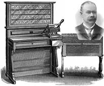
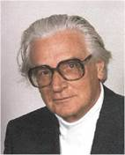

Prije samoga programiranja
Još u 1804. godini Joseph Marie Jacquard je napravio takozvani „Jacquardov tkalački stan“ koji je koristio tehnologiju bušenih kartica. Bušene kartice su komadi tvrdog papira koji imaju ili nemaju rupe na određenim mjestima što predstavlja digitalne informacije. On je koristio tu tehnologiju na tkalačkome stanu tako što bi kartice služile za izradu specifičnih dizajna tkanine.
U nadolazećim godinama i većim dijelom 20. stoljeća ta će se tehnologija koristiti a Jacquard je bio među prvima koji to započeo.
Ada Lovelace
Od 1832.-1843. Ada Lovelace je radila za Charlesa Babbage zbog njegovog 'analitičkog stroja'. Uvidjela je potencijal samoga stroja i odlučila je napisati algoritam za Bernoullijeve brojeve što joj je i uspjelo i nakon objavljivanja rada postala je svjetski poznata i priznata kao prvi programer ikada. (Wikipedia n.d.)
Herman Hollerith
1890. godine H.Hollerith je napravio 'tabulating machine' koje u korišten iste godine za popisivanje stanovništva Sjedinjenih Američkih Država(U.S.A Census ). Koristio je tehnologiju bušenih kartica što je znatno smanjilo vrijeme potrebno za prebrojavanje. Kasnije je osnovao kompaniju „Tabulating Machine Company“ koju je spojio s još 3 tada velike kompanije i stvorio „Computing-Tabulating-Recording Company“ koja će biti poznata po imenu „International Business Machines“ (IBM). (Wikipedia n.d.)
Konrad Zuse
Tijekom Drugog svjetskog rata civilni inženjer Konrad Zuse je počeo rad na programskom jeziku zvanom 'Plankalkül'-u ili izračunu plana, prvome algoritamskom programskom jeziku više razine .
U 1938. god. napravio je prvo svjetsko binarno digitalno računalo „Z1“. Ubrzo zatim 1940. godine pod pokroviteljstvom i s resursima njemačke vlade „Z2“ koji je bio nadogradnja “Z1“ i koji je imao električne strujne krugove. 1941-e je dovršio „Z3“ – prvo funkcionalno programski kontrolirano elektromehaničko digitalno računalo. Od svih njegovih izuma rat je samo preživjelo računalo „Z4“. (Wikipedia n.d.)
